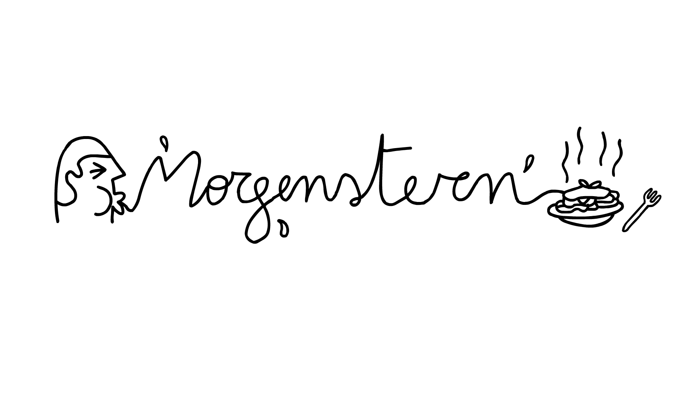

Oppslagsverk
En samlet ordliste over begrepene kurset bruker, med kort definisjon, primærkilde og lenke tilbake til økten der begrepet behandles i dybden.

- Mental tilgjengelighet Økt 5 · Sharp
- Sannsynligheten for at en merkevare dukker opp i hodet til en kunde i en kjøpssituasjon. Oftest den viktigste jobben reklame gjør — og en av de mest misforståtte. Bygges ved at merkevaren kobles til mange kategori-inngangsporter i hukommelsen. Les økt 5 →
- Kategori-inngangsport Økt 5 · Sharp · Romaniuk
- En situasjon, et behov eller et øyeblikk som får en kunde til å tenke på kategorien (f.eks. "tørst etter trening", "pizza på fredag"). Jo flere inngangsporter merkevaren er knyttet til, jo oftere blir den hentet fram. Ikke det samme som "vanligste brukssituasjon". Les økt 5 →
- Distinkte merkemarkører Økt 6 · Sharp · Romaniuk
- Visuelle og auditive elementer som er unikt knyttet til merkevaren (logo, farge, musikalsk signatur, typografi, karakterer) og som gjør den gjenkjennelig uten at navnet nevnes. Ikke det samme som differensiering — poenget er gjenkjenning, ikke overtalelse. Les økt 6 →
- Double Jeopardy Økt 7 · Ehrenberg-Bass
- Empirisk lovmessighet: små merker har både færre kunder og litt mindre lojale kunder enn store merker. Lojalitet følger størrelse, ikke omvendt. Implikasjon: vekst kommer fra flere kunder, ikke fra dypere lojalitet. Les økt 7 →
- 60/40-regelen Økt 3 · Binet & Field
- Basert på IPA-databanken: optimal mediemix ligger i snitt rundt 60 % merkebygging og 40 % salgsaktivering, målt over tid. Rask aktivering alene bygger ikke merket; ren merkebygging uten aktivering konverterer ikke. Les økt 3 →
- Signalverdi Økt 9 · Sutherland · Spence
- Ideen om at signaler må være kostbare for å bære mening. Noe som er gratis å produsere, er gratis å ignorere. Gjelder både merkevarer (dyr reklame = seriøst merke) og enkeltannonser (innsats = seriøs intensjon). Les økt 9 →
- Sosial validering Økt 11 · Cialdini
- Tendensen til å se etter hva andre gjør i usikre situasjoner — og kopiere — særlig når de andre ligner oss selv. Motoren bak kundetestimonialer, anmeldelsestall og bestselgermerking. Et av Cialdinis seks klassiske overtalelses-prinsipper. Les økt 11 →